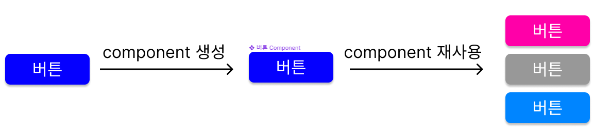
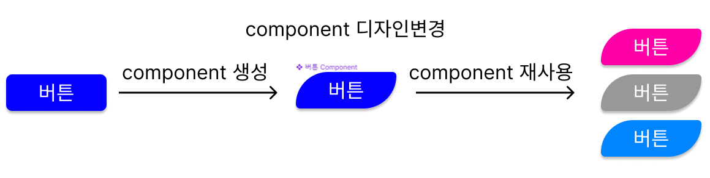
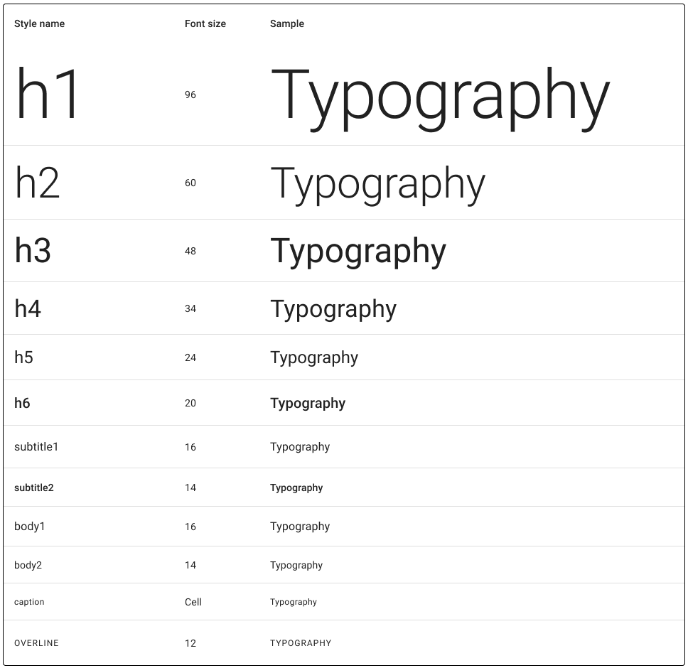
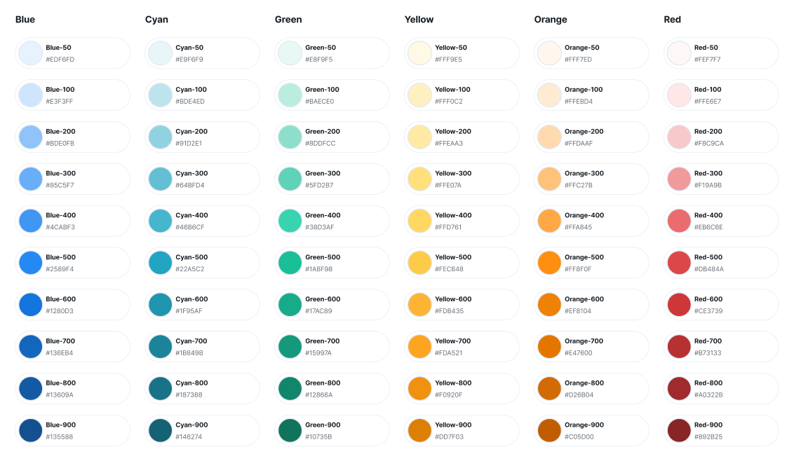
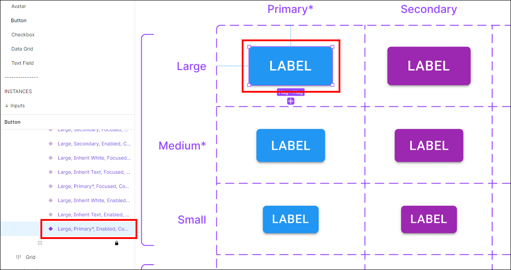
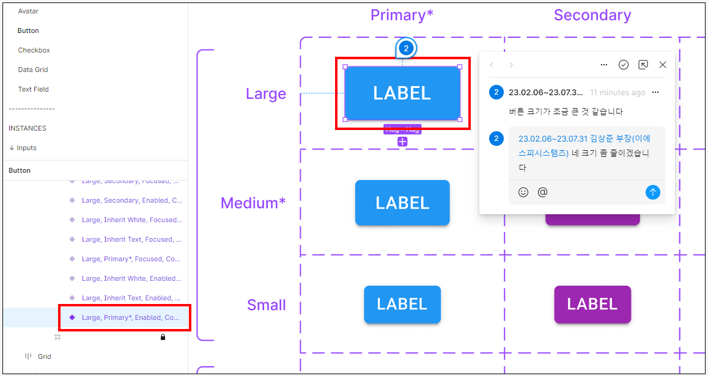
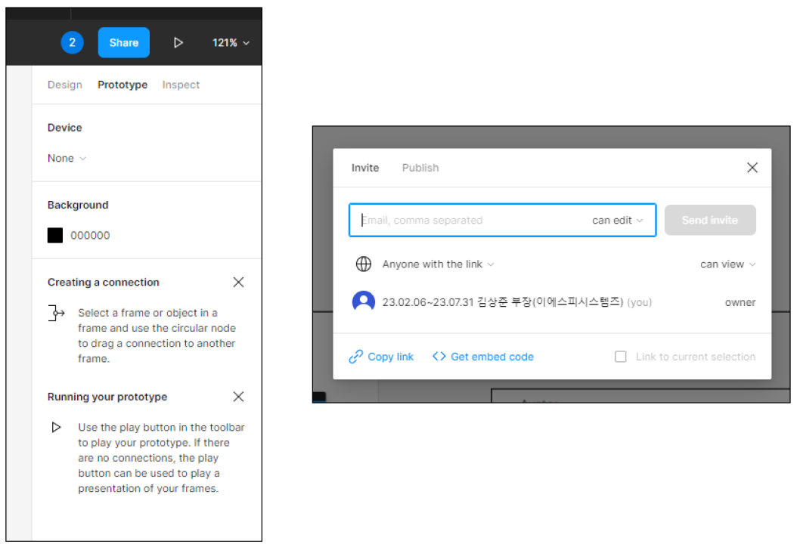
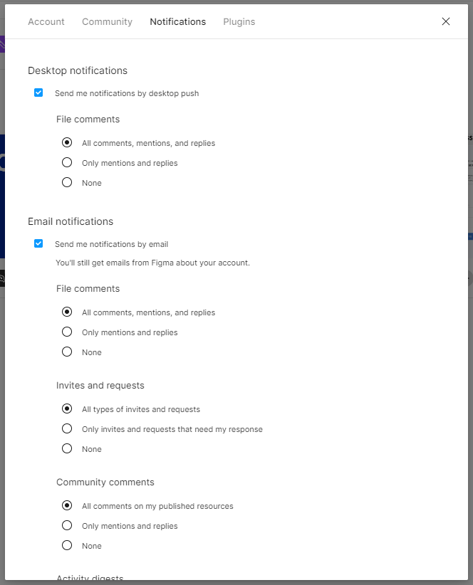

피그마(Figma)는 디자인 도구로서 개발 프로젝트를 원활하게 진행하는 데 많은 도움을 줄 수 있습니다.
프로젝트에 관련된 사람들이 웹사이트, 모바일 앱 및 기타 디지털 제품과 경험을 위한 디자인을 만들고 공유하고 테스트할 수 있으며,
기획자, 디자이너, 관리자, 퍼블리셔 및 개발자등 에게 널리 사용되는 도구이며 디자인 프로세스에 참여하는 모든 사람이 기여하고 피드백을 제공하며 더 나은 결정을 더 빠르게 내릴 수 있도록 도와줍니다.
아래는 피그마(Figma)를 이용한 개발 프로젝트를 원활하게 진행하기 위해서 협업하는 방법에 대한 가이드라인 입니다.
-
협업 환경 구성프로젝트 팀원들과 피그마에서 협업을 위한 적절한 환경을 구성해야 합니다. 프로젝트 파일을 공유하고 실시간으로 작업을 동기화할 수 있도록 팀원들을 초대하고 권한을 설정해야 합니다.
- 피그마(Figma)는 웹브라우저(browser), 데스크탑앱(desktop app), 모바일앱(mobile app) 3가지 환경에서 사용할 수 있습니다.
- 프로젝트 고객사에서 Enterprise 버전을 사용하고 있다면 Figma 담당자에게 문의하여 프로젝트 생성과 권한을 할당 받을수 있습니다.
- 고객사가 Figma제품을 보유하고 있지 않거나 제공받을 수 없다면 figma.com에 접속하여 회원 가입 후 제품을 구매 할 수 있습니다.
- 팀원별로 Editor 또는 Viewer 권한을 관리 하기 위해서는 Propassional 버전 이상을 권장 합니다.
- Editor(기획자, 디자이너), Viewer(현업, PM, PMO, PL, 퍼블리셔, 개발자 등 프로젝트 팀원)
- 모든 팀원들은 Figma.com에 접속하여 회원가입을 하고 Figma담당자(통상 디자이너가 담당)에게 Figma ID(이메일주소)를 알려주면 담당자는 팀원을 초대하고 edit 또는 view권한을 할당합니다.
-
프로젝트 파일 구성프로젝트 파일을 구성할 때, 페이지와 프레임을 사용하여 구조를 체계적으로 정리해야 합니다. 각 페이지는 주요 섹션 또는 기능을 나타내며, 프레임은 해당 섹션 또는 기능 내에서 상호작용 및 디자인 요소를 그룹화합니다.
- 프로젝트의 구조를 미리 계획하는 것이 중요합니다. 대부분의 프로젝트는 홈페이지, 사용자 인터페이스, 아이콘 라이브러리, 컴포넌트 등의 여러 페이지로 구성됩니다. 각 페이지에는 해당 페이지와 관련된 프레임이 포함되어야 합니다.
- 페이지는 여러 프레임을 구성하는 컨테이너 역할을 합니다. 프로젝트 페이지를 사용하여 프레임을 그룹화하고 프로젝트의 전체 구조를 시각적으로 파악할 수 있습니다. 예를 들어, "홈 페이지", "사용자 인터페이스" 및 "컴포넌트 라이브러리"와 같은 프로젝트 페이지를 만들 수 있습니다.
- 프레임은 Figma에서 디자인의 기본 단위입니다. 각 프레임은 단일 화면 또는 화면 집합을 나타냅니다. 각각의 프레임은 다른 버전이나 상태에 대한 변형을 나타낼 수 있습니다. 예를 들어, 메인 페이지에는 데스크톱 버전, 태블릿 버전 및 모바일 버전을 포함하는 세 개의 프레임을 만들 수 있습니다.
- 각 프레임에 명확하고 기술적인 이름을 부여하는 것이 좋습니다. 프레임 이름은 해당 화면의 역할과 의도를 명시해야 합니다. 예를 들어, "홈 페이지-데스크톱" 또는 "로그인 폼-모바일"과 같은 이름을 사용할 수 있습니다.
- 프레임은 링크를 통해 다른 프레임과 연결할 수 있습니다. 각 페이지의 핵심 프레임에서 다른 페이지로 이동할 수 있는 링크를 만들어 사용자 경험을 시뮬레이션할 수 있습니다. 이를 통해 사용자의 흐름과 인터랙션을 효과적으로 확인할 수 있습니다.
특히 이기능은 기획자가 와이어프레임 작업을 할때나 디자이너가 고객에게 시안 컨펌을 받을때 디바이스에서 실제 작동하는 것처럼 보여줄 수 있어서 유용하게 사용됩니다. - 아래는 MUI를 이용한 개발 프로젝트에서 유용하게 쓸 수 있는 MUI for Figma 플러그인 입니다.
https://mui.com/store/items/figma-react/ 에서 구매할 수 있습니다.
-
컴포넌트 라이브러리 활용피그마의 컴포넌트 기능을 활용하여 재사용 가능한 디자인 요소를 생성하고 관리해야 합니다. 버튼, 폼 요소, 아이콘 등과 같은 컴포넌트를 만들어서 일관된 디자인과 개발을 유지할 수 있습니다.
- Figma에서의 Component기능은 디자인의 일관성을 유지하기 위한 필수 기능 입니다.
- 아래 그림은 버튼을 디자인 하고 Component로 만들어 재사용하고 나중에 재사용된 버튼들을 Component를 수정하여 전체 적용하는 예시 입니다.
- 
- 
- 재사용된 버튼은 각자의 컬러를 제외한 모든 디자인적 요소는 Component 버튼으로 부터 물려 받습니다. 버튼 이외에도 폼 요소, 아이콘, 텍스트등 모든요소들을 Figma Component로 만들어서 관리할 수 있습니다.
-
디자인 시스템 개발일관된 디자인을 유지하기 위해 디자인 시스템을 개발해야 합니다. 컬러 팔레트, 텍스트 스타일, 그리드 시스템, 레이아웃 가이드 등을 포함하여 디자인 원칙을 Component화하고 공유해야 합니다. 아래는 디자인 시스템을 프레임별로 Component화한 예시 입니다.
- 

- 
-
주석 및 설명 추가피그마에서 요소에 주석을 추가하여 개발자들이 디자인의 의도를 이해하도록 도움을 줄 수 있습니다. 디자인의 특정 부분에 대한 설명을 추가하고 필요한 경우 프로토타입에 대한 상세한 설명을 제공해야 합니다.
- 주석을 추가하려는 Figma 파일에서 작업 중인 객체 또는 요소를 선택합니다. 선택은 레이어 패널에서 직접 클릭하거나 캔버스에서 요소를 클릭하여 수행할 수 있습니다.
- 
- 상단 메뉴에서 "프로토타입" 탭을 클릭하고 "주석 도구"를 선택합니다. 주석 도구는 캔버스 상단에 나타납니다.

- 주석 도구를 활성화한 후, 주석을 추가하려는 객체 위로 마우스를 이동시켜서 해당 객체에 대한 주석 영역을 선택합니다. 선택 영역은 주석에 대한 대상을 정의하는 데 사용됩니다.
- 주석 영역을 선택한 후, 주석 패널이 열립니다. 주석 패널에서 설명, 피드백 또는 필요한 내용을 입력합니다. 필요한 경우에는 마크업 기능을 사용하여 텍스트 스타일, 링크 또는 첨부 파일을 추가할 수도 있습니다.
- 주석을 작성하고 나면 주석 패널 아래에 있는 "댓글"란에 참여자를 추가하여 주석을 공유할 수 있습니다. 이를 통해 협업자와 디자인에 대한 의견을 공유하고 토론할 수 있습니다.
- 주석이 추가된 객체는 선택한 요소 주변에 주석 아이콘이 표시됩니다. 주석이 있는 객체를 클릭하면 주석 패널이 열리고, 해당 주석과 관련된 내용을 확인할 수 있습니다.
-
퍼블리셔 및 개발자와의 협업퍼블리셔 또는 개발자들과 피그마를 통해 소통하고 협업해야 합니다. 개발자들이 디자인 파일을 열어볼 수 있도록 링크를 공유하고, 디자인 요소의 스펙을 정확하게 전달해야 합니다. 디자인 파일을 업데이트할 때 반드시 퍼블리셔 또는 개발자들에게 알림을 보내고 변경 사항을 공유해야 합니다.
- 디자인 파일에서 특정 요소에 대한 의견을 작성할 수 있습니다. 원하는 요소를 선택하고 "C" 키를 눌러 코멘트 패널을 열거나, 오른쪽 클릭하여 "Add Comment"를 선택합니다. 코멘트를 작성한 후에는 "@멘션"을 사용하여 특정 팀원에게 알림을 보낼 수 있습니다. 예를 들어, "@username"을 입력하면 해당 팀원에게 알림이 전송됩니다.
- 
- Figma에서 디자인 파일을 프로토타입으로 변환하고 팀원과 공유할 수 있습니다. 프로토타입을 공유하면 팀원들은 디자인 파일에 대한 의견을 작성하고 알림을 받을 수 있습니다. 프로토타입 공유를 위해 "Share" 버튼을 클릭하고, 필요한 설정을 완료한 후에는 "Copy Link"를 선택하여 링크를 팀원들과 공유합니다.
- 

- Figma 설정에서 이메일 알림을 활성화할 수 있습니다. 이렇게 하면 팀원이 코멘트를 남기거나 파일을 공유할 때 이메일로 알림을 받을 수 있습니다. 설정 페이지로 이동하려면 우측 상단의 계정 메뉴를 클릭한 후 "Settings"를 선택합니다. "Notifications" 탭에서 이메일 알림을 관리할 수 있습니다.
- 
- 프로젝트 네트워크 환경이 폐쇄망이어서 Figma 알림이나 외부메일 알림 발송, 확인이 여의치 않은 경우 내부망의 협업시스템이나 내부이메일, 메신저등을 이용하여 소통하고 협업 해야 합니다.